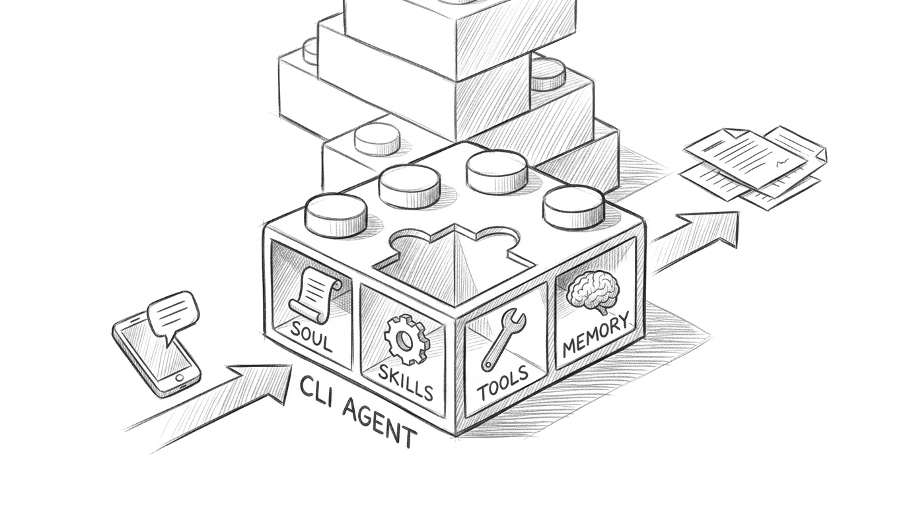
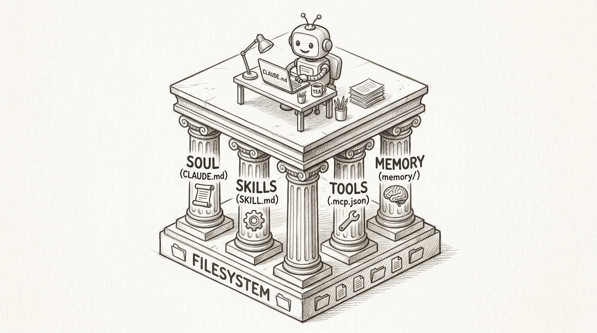
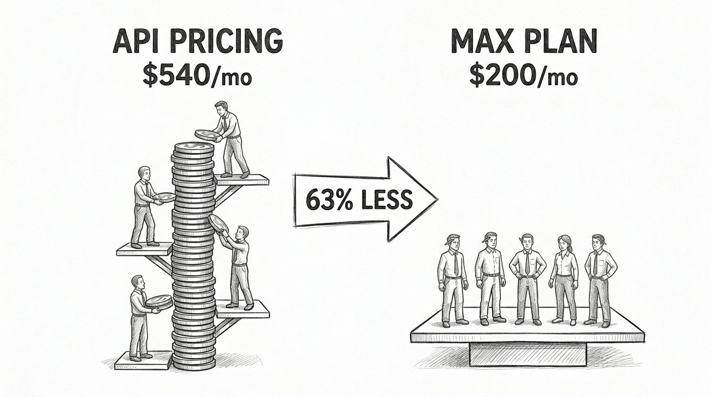
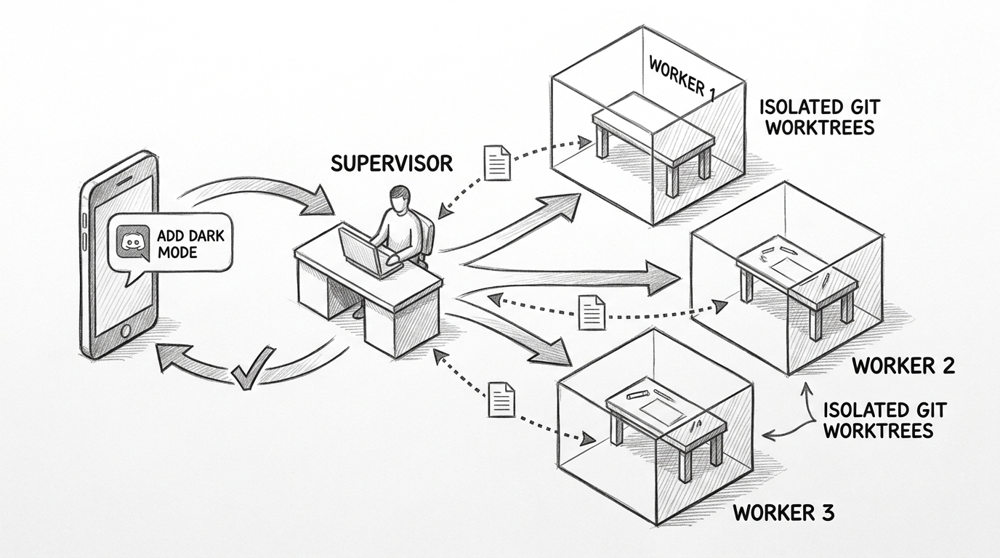
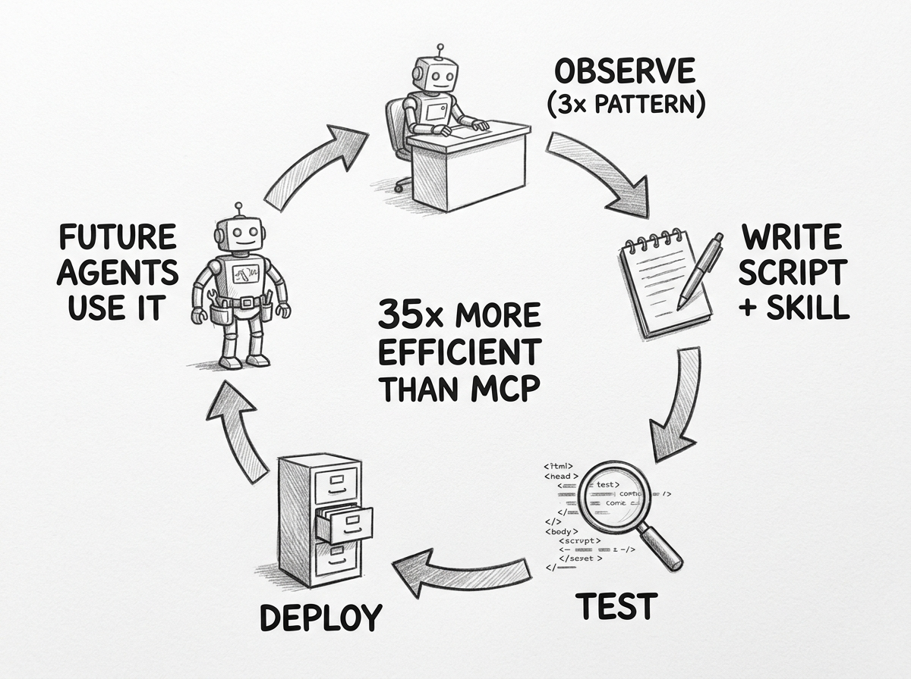
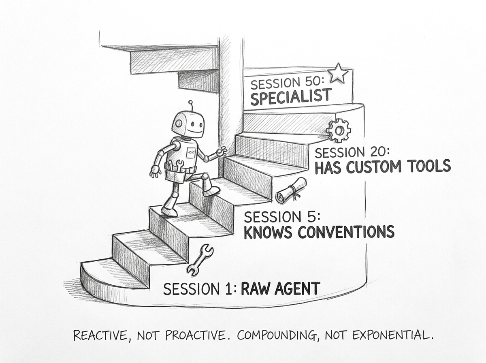

Building Complex Agents from Simple CLI Blocks
Building Complex Agents from Simple CLI Blocks
You have a coding agent that edits files, runs tests, and commits to git. It handles tasks one at a time, in one terminal, for one person. You close the terminal, the agent is gone.
What if that same agent could receive tasks from your phone, work on three things simultaneously in isolated branches, build its own tools when it spots a pattern, and remember what it learned last week? Not by rewriting it from scratch — but by stacking the agent you already have.
This is not Claude Code Channels — Anthropic's new Discord and Telegram bridge that lets you message a single running session from your phone. Channels is a remote control. What we are talking about is an architecture: use an established CLI agent as an atomic building block and compose it into something bigger — a system that manages multiple sessions, dispatches parallel workers, builds its own tools, and gets better over time. Like LEGOs. Snap pieces together, build upward.

The Atomic Unit
Claude Code's -p flag turns it into a Unix utility. Give it a prompt, it processes it, prints the result, exits. One shot. Stateless. Composable.
claude -p "find the bug in auth.py and fix it" --output-format json
That single command gets you file editing, bash execution, git operations, test running, and structured JSON output. The full agent toolset in one invocation.
The flag that makes composition real is --output-format stream-json paired with --input-format stream-json. This lets you pipe the structured output of one agent directly into another — not just raw text, but the full event stream including tool calls, reasoning steps, and structured data.
claude -p --output-format stream-json "analyze the codebase" | \
claude -p --input-format stream-json --output-format stream-json "design improvements" | \
claude -p --input-format stream-json "implement the top 3"
Three agents. Three fresh context windows. Structured data flowing between them. Each one is the same atomic unit — claude -p — doing a different job.
The Four Pillars
Every atomic agent comes pre-loaded with four capabilities that make composition work. They are not features you build. They are filesystem conventions you configure.

Soul is CLAUDE.md. A markdown file loaded at every session start that defines who the agent is — its role, constraints, conventions, and project knowledge. Every agent in the same project inherits the same CLAUDE.md. Change one file, every agent changes behavior. It survives context compaction. It is the shared genome.
Skills are SKILL.md files in .claude/skills/. Self-contained capability modules with a standard frontmatter interface. The agent loads skill descriptions at startup (cheap — ~100 tokens each) and fetches full content on demand when relevant. An agent can create new skills by writing files to this directory. The filesystem is the skill registry.
Tools come from two places: built-in tools (file editing, bash, git) and MCP servers configured in .mcp.json. MCP config has three scopes — local, project, and user — with the most specific winning. You can give different agents different tool configs via --mcp-config. An agent can write its own MCP server script and add it to the config.
Memory is markdown files in .claude/projects/<path>/memory/. Four types — user, feedback, project, reference — each with YAML frontmatter. An index file (MEMORY.md, first 200 lines) loads at session start. Topic files load on demand. Subagents can have their own isolated memory via the memory: frontmatter field with user, project, or local scope.
Every pillar is a file on disk. Every file is version-controllable. git clone gives you the agent's full identity, capabilities, tools, and accumulated knowledge.
The Economics
On Anthropic's API, each claude -p call burns ~50,000 tokens just for system prompt, CLAUDE.md, skill descriptions, and tool definitions. That is before any actual work. A five-stage pipeline pays this five times. At Sonnet pricing, 20 tasks per day costs ~$324 per month. That overhead is 40-60% of total spend — tokens spent on boilerplate, not on thinking.
Claude Max changes the math entirely.

At $200 per month flat, the token overhead is free. Each worker gets the full agent toolset — file editing, bash, git, subagents, skills, memory, MCP — at zero marginal cost. The same workload that costs $324-540 on API pricing costs $200 on Max. And that $200 buys you capabilities that would take weeks to reimplement via raw API calls. The subscription model makes CLI agent composition economically dominant for developer workflows.
Stacking: Supervisor and Workers
The interesting architecture is not a chain of pipes. It is a persistent supervisor that dispatches fire-and-forget workers.
The supervisor is a Claude Code session connected to Discord (or Telegram) via Channels — Anthropic's official messenger integration shipped March 2026. It stays alive, listens for messages, and routes tasks. It does not do heavy work itself.
When a task arrives from Discord, the supervisor spawns a worker:
env -u CLAUDECODE -u CLAUDE_CODE_ENTRYPOINT \
claude -p "Add dark mode toggle to settings page" \
--output-format json \
--worktree task-dark-mode \
--max-turns 50 \
--allowedTools "Bash,Read,Write,Edit,Glob,Grep" \
> .tasks/completed/dark-mode.json 2>&1 &
The env -u CLAUDECODE is essential — without it, the child process detects it is inside another Claude Code session and refuses to start. The --worktree flag gives the worker an isolated git branch. The & runs it in the background so the supervisor stays responsive.

The supervisor polls a task directory for results. When a worker finishes, it reads the output and sends a summary back to Discord. The user never touches the terminal. All interaction flows through the messenger.
Each task gets its own session, its own worktree, its own context window. Three tasks run in parallel without stepping on each other. Merge conflicts — if any — surface at PR time, not during execution.
This pattern already exists in production. The Dispatch skill by bassimeledath implements exactly this. incident.io runs 4-5 parallel Claude Code worktrees daily. Claude Squad manages multiple instances via tmux. The architecture is not theoretical.
The Toolsmith Loop
The most interesting part is not composition — it is self-development.
When an agent notices it has performed the same multi-step operation three or more times, it can extract it into a reusable CLI tool. A Python script. A shell one-liner. Whatever fits the job.
The tool lives inside a skill:
.claude/skills/parse-api-errors/
├── SKILL.md # How to use it
└── scripts/
└── parse-api-errors.py # The actual tool
The SKILL.md uses ${CLAUDE_SKILL_DIR} to reference the script portably. Future claude -p calls discover the skill via description matching, load the instructions, and run the script via bash. No reinstallation. No configuration. Write the files, and every future worker inherits the capability.

CLI tools wrapped in skills are 35 times more token-efficient than MCP servers for the same task. A skill description costs ~100 tokens to hold in context. An MCP server schema dump can cost 55,000. The community consensus is emerging: start with CLI tools, add MCP when you need authentication flows or shared state across agents.
OpenClaw's Foundry extension crystallizes this pattern at scale — when a workflow reaches five successful uses with 70% or higher success rate, it auto-generates executable code. The idea is sound. The implementation is early.
The Self-Improvement Spiral
Each cycle of work leaves the agent slightly better than before.
A user corrects the agent — "do not mock the database in tests." The agent writes a feedback memory file. Next session, that memory loads at startup. The agent never makes the same mistake twice. This is real. It is documented. After a month of daily use, the accumulated corrections form a reliable behavioral profile.
But the improvement is reactive, not proactive. The agent learns what you correct. It does not autonomously identify its own weaknesses. Community workarounds exist — a wrap-up skill that reviews session patterns, a claude-self-improve tool that analyzed 52 sessions and found a 42% friction rate. These work, but they run on human initiative.
The honest assessment: self-improvement through memory and skill creation is compounding. After weeks of use, the agent knows your build commands, coding conventions, testing philosophy, and repeated patterns. It has tools it built itself. The improvement is real but bounded — like a colleague who takes excellent notes rather than one who independently studies the domain.

Where LEGO Holds and Breaks
The LEGO metaphor is accurate at the configuration layer. CLAUDE.md, SKILL.md, .mcp.json, subagent YAML — these have real schemas, real scoping rules, real composability. You can git clone an agent's capabilities and they work.
The metaphor weakens at the orchestration layer. Stream-JSON gives you structured envelopes, but the content inside is non-deterministic. The downstream agent parses the JSON reliably but interprets the payload differently each time.
The metaphor breaks at the runtime layer. Each agent call is a non-deterministic black box. 95% reliability per step means 77% for a five-step chain. Persistent memory introduces hidden state that makes identical configurations behave differently over time. This is not LEGO. This is building with blocks that sway.
For personal automation and prototyping, that sway is acceptable. The assembly speed is the point. For production systems that need SLAs, structured error recovery, and observability — the Agent SDK or a dedicated framework like the Vercel Workflow DevKit is the right tool.
The pattern here is bigger than one agent or one CLI. Any sufficiently capable agent with a non-interactive mode, a plugin system, and a persistent memory layer becomes a composable building block. Snap together identity, capabilities, tools, and memory. Wire in a messenger. Let it learn. The individual pieces exist today across multiple tools. The composition is where the leverage lives.
References
- Anthropic. "Claude Code Channels Reference." code.claude.com/docs/en/channels-reference.
- Anthropic. "Create Custom Subagents." code.claude.com/docs/en/sub-agents.
- Anthropic. "Claude Code CLI Reference." code.claude.com/docs/en/cli-reference.
- Bassim Eledath. "10x Your Claude Code Window Size with Dispatch." bassimeledath.com/blog/dispatch.
- incident.io. "Running Multiple AI Agents in Parallel." Case study (2026).
- Shapira et al. "Agents of Chaos." arXiv:2602.20021 (Feb 2026).
- VentureBeat. "Anthropic Shipped an OpenClaw Killer Called Claude Code Channels." (March 2026).
- OpenClaw. "Session Management." docs.openclaw.ai/concepts/session.